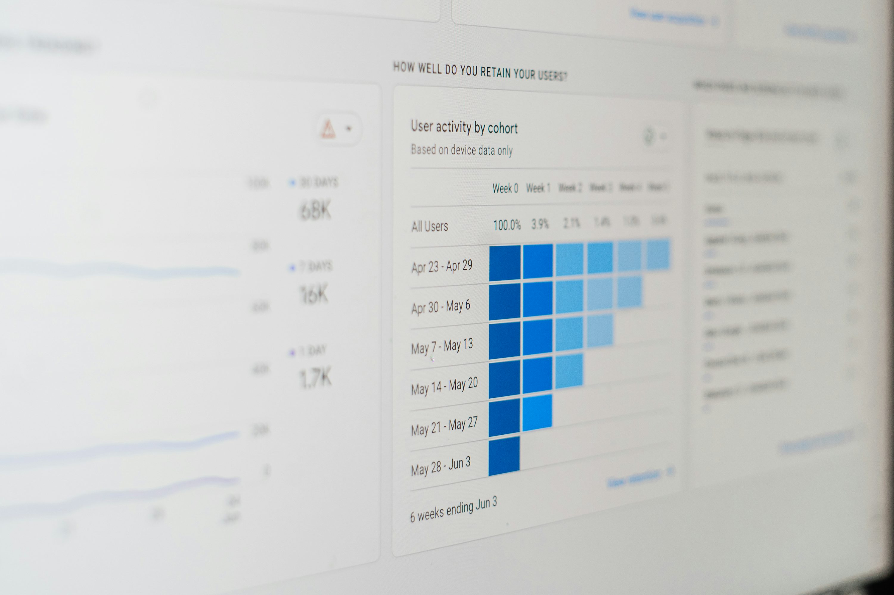

Programação e Bancos de Dados
- Python aplicado à análise de dados e ETL
- SQL para extração, análise e modelagem
- SQLite, PostgreSQL e MySQL
Sobre este portfólio
Este portfólio reúne projetos práticos de Análise de Dados e Business Intelligence desenvolvidos a partir de problemas de negócio reais ou simulados, utilizando dados públicos e estruturados.
Os projetos demonstram minha capacidade de coletar, tratar, modelar e analisar dados, transformando dados brutos em informações acionáveis para apoiar decisões estratégicas.
Atuo em todo o pipeline analítico, desde ETL e organização dos dados até análise exploratória, criação de métricas, dashboards e comunicação clara dos resultados.
Tenho 24 anos e atuo com Análise de Dados e Business Intelligence, com experiência prática adquirida por meio de projetos próprios focados em problemas de negócio.
Trabalho com dados reais desde a etapa de extração e tratamento até a análise e visualização, buscando sempre apoiar a tomada de decisão com clareza, consistência e foco em impacto.
Tenho interesse em oportunidades como Analista de Dados Júnior ou BI, onde possa contribuir com análises, dashboards e automações que gerem valor direto para a empresa.
Projeto de ETL desenvolvido em Python a partir dos dados públicos do IMDb, com foco em extração, tratamento, padronização e persistência dos dados para posterior análise e suporte à tomada de decisão.
Modelagem e análise de dados de vendas com foco em estrutura relacional, consultas analíticas e geração de insights para apoio à decisão comercial.
Análise exploratória de dados públicos com foco em limpeza, consistência e geração de insights para apoio a políticas públicas e impacto social.

Dashboard interativo desenvolvido no Power BI para análise de preços, localização, demanda e padrões de receita no mercado imobiliário.